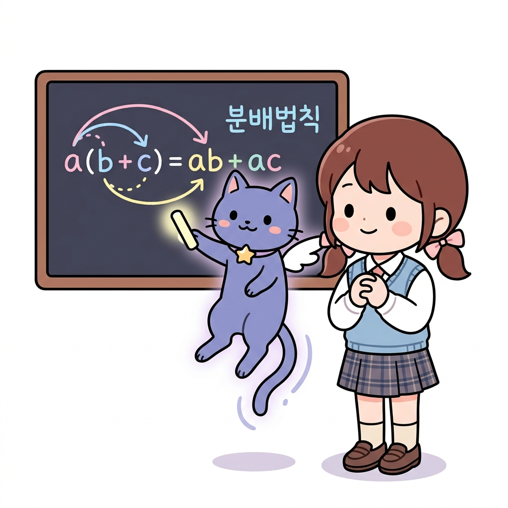
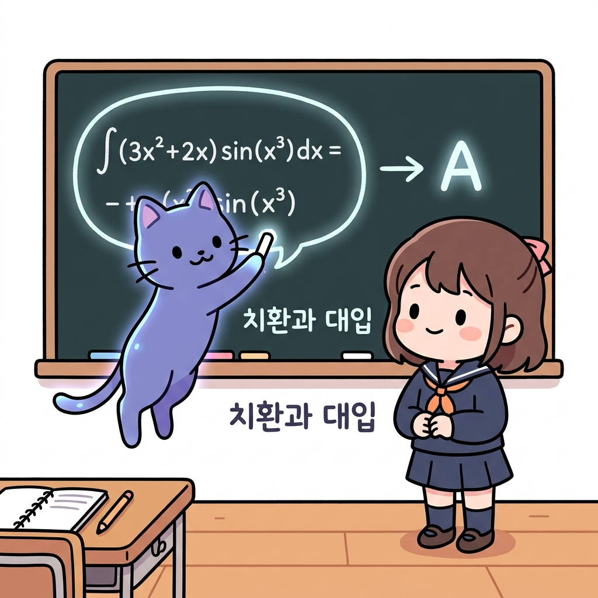
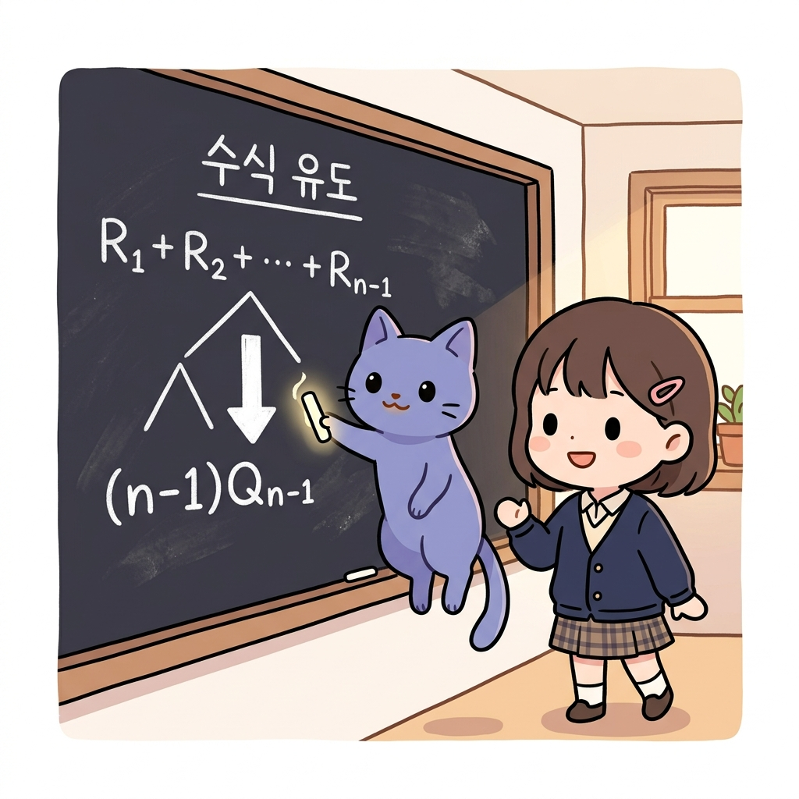

02.1 식의 구성과 치환, 교환/분배법칙
이 장에서는 복잡한 수식을 단순하게 압축하고 재구성하기 위해 필수적인 식의 구성, 치환(Substitution), 그리고 결합/분배법칙을 배웁니다. 이 대수 규칙들을 이해하면 강화학습 공식 유도 시 수만 개의 문자 데이터를 수식 한 줄로 깔끔하게 정리해낼 수 있습니다.
02.1.1 복잡한 수식을 가뿐하게 요리하기
그림 02-1-1 긴 수식의 공통 항을 하나의 동그라미 문자 상자로 묶어 마법처럼 식을 축소시키는 지니와 도로시
수많은 숫자가 나열된 식을 보고 겁먹을 필요는 전혀 없습니다!
수학에는 긴 식을 단순한 문자 하나로 묶어 다루는 치환과, 식의 곱셈을 분배하거나 묶어 정리하는 분배법칙이라는 강력한 도구들이 있기 때문이죠. 지니의 마법 석판 판서와 함께 이 수학 부품들을 마음대로 조립하고 정리하는 비법을 습득해봅시다!
1. 학습 목표
- 식의 전개와 공통인수로 묶기(분배법칙)를 이해하고 자유롭게 계산할 수 있다.
- 치환(Substitution)의 정의와 복잡한 식의 간소화 효과를 이해한다.
- 교환법칙, 결합법칙, 분배법칙을 활용하여 수식의 구조를 원하는 형태로 변형할 수 있다.
2. 핵심 개념
(1) 교환법칙 (Commutative Law)
더하거나 곱하는 두 수의 연산 순서를 바꾸어 계산해도 그 결과가 정확히 성립한다는 대수 규칙입니다.
- 공식: a + b = b + a (덧셈의 교환법칙) a × b = b × a (곱셈의 교환법칙)
그림 02-1-2 연산 순서를 서로 바꾸어도 마법처럼 양팔저울의 등식이 완벽히 보존되는 교환법칙을 공부하는 도로시와 지니
- 강화학습 연계 예시:
- 오차값과 학습률을 곱해 가치를 업데이트할 때, α × (Rn - Qn-1) 과 (Rn - Qn-1) × α 는 곱셈의 교환법칙에 의해 완벽히 같으므로 코드 구현 시 동일하게 처리됩니다.
(2) 분배법칙 (Distributive Law)과 공통인수 묶기
괄호 밖의 수를 괄호 안의 모든 항에 각각 곱하여 전개하거나, 반대로 각 항에 공통으로 들어있는 문자(공통인수)를 묶어 괄호 밖으로 빼내는 규칙입니다.
- 공식: a(b + c) = ab + ac ab + ac = a(b + c) (공통인수 a로 묶기)

그림 02-1-3 괄호 밖의 변수를 고루 나누어 곱해주거나, 반대로 공통인수로 곱해서 식을 요리하는 분배법칙- 강화학습 연계 예시:
표본 평균 및 지수 감쇄 유도 과정에서 다음과 같은 분배법칙이 빈번하게 사용됩니다.
Qn-1 - α Qn-1 = (1 - α) Qn-1
- 해설: 두 항에 공통으로 곱해져 있는 Qn-1을 공통인수로 보고 분배법칙의 역으로 묶어낸 결과입니다. (두 변수의 문자 겹침으로 인한 마크다운 깨짐 방지를 위해 부호 사이에 공백 문자를 명시했습니다).
(3) 치환 (Substitution)과 대입
어떤 복잡한 수식이나 공통된 긴 묶음을 간단한 하나의 문자(또는 상자)로 바꾸어 놓고 식을 전개하는 기법입니다.
- 원리:
- 만약 A = x + y + z 라고 미리 정해(치환) 둔다면, 복잡한 식 (x + y + z)2 + 3(x + y + z) 은 단순히 A2 + 3A 로 아주 가볍게 쓸 수 있습니다.
- 계산이 모두 끝난 뒤 마지막에 원래 식을 다시 대입해 넣어주면 됩니다.

그림 02-1-4 복잡한 식의 일부분을 한 문자로 가볍게 묶어 치환하고 대입하는 대수 조작법- 강화학습 연계 예시:
- 식 3.2 유도: 이전 시점의 평균 식인 Qn-1 = (R1 + … + Rn-1) / (n - 1) 을 정리해 (R1 + … + Rn-1) = (n - 1)Qn-1 로 변형합니다. 그리고 Qn 식의 분자 부분에 있는 (R1 + … + Rn-1) 이라는 길고 무거운 부분을 단번에 ((n - 1)Qn-1)로 치환(대입)하여 식을 간소하게 완성합니다.
(4) 수학적 표현 vs 파이썬 프로그래밍의 비교
컴퓨터의 프로그래밍 언어(파이썬)에서도 수학의 수식 전개, 우선순위, 치환 등의 원리가 완벽히 녹아들어 작동하고 있습니다.
1) 식의 평가와 연산자 우선순위 (Operator Precedence)
- 수학: 곱셈과 나눗셈을 덧셈과 뺄셈보다 먼저 계산하며, 괄호
()가 씌워진 부분을 가장 우선하여 연산합니다. - 파이썬: 연산자 우선순위에 따라 작동합니다.
()➔**(거듭제곱) ➔*,/(곱셈, 나눗셈) ➔+,-(덧셈, 뺄셈) 순으로 평가됩니다.- 예시: 수학식 1 - α Qn-1 은 곱셈이 먼저 계산되어 1 - (α × Qn-1) 이 됩니다. 파이썬 코드
1 - alpha * q_prev또한*의 우선순위가-보다 높으므로 수학적 규칙과 완벽하게 동일한 순서로 처리됩니다.
- 예시: 수학식 1 - α Qn-1 은 곱셈이 먼저 계산되어 1 - (α × Qn-1) 이 됩니다. 파이썬 코드
2) 변수(Variable)를 이용한 치환과 대입
- 수학: 복잡한 묶음식을 기호 A로 치환해 간단히 표현한 뒤 최종 전개합니다.
- 파이썬: 복잡한 식의 결과값을 변수명(Variable)에 할당(
=)하여 사용합니다.# 수학의 치환과 대입에 해당하는 파이썬 코드 target_diff = reward + gamma * next_state_value - current_value # 치환 current_value = current_value + alpha * target_diff # 대입- 파이썬에서 변수를 사용하는 것은 수학의 치환과 같을 뿐만 아니라, 중복 연산을 피해 메모리와 CPU 연산을 절약하는 성능 최적화의 효과를 낳습니다.
3) 분배법칙을 통한 연산 횟수 최적화
- 수학의 분배법칙 a × b + a × c = a × (b + c) 는 컴퓨터 연산 장치의 연산량 최적화와도 직결됩니다.
- 식 A (
a * b + a * c): 곱셈 2번 + 덧셈 1번 = 총 3번의 연산 필요 - 식 B (
a * (b + c)): 곱셈 1번 + 덧셈 1번 = 총 2번의 연산 필요 - 분배법칙을 활용해 코드를 작성하면 컴퓨터 장치가 수행해야 할 소모적인 부동소수점 곱셈 연산 횟수를 절반으로 줄일 수 있습니다. 수억 번 학습을 반복하는 강화학습 에이전트의 구동 속도를 비약적으로 단축시키는 비결이 바로 이 분배법칙의 코드 최적화에 있습니다.
- 식 A (
3. 시각 자료: 치환을 통한 수식 유도 트리 다이어그램

그림 02-1-5 이전 시점까지의 보상 합산 수열을 평균 치환식으로 대입하여 한 줄의 깔끔한 재귀 평균 점화식으로 유도해내는 전개 과정4. 실전 예제
예제 1 (분배법칙과 인수분해)
문제: 다음 식을 분배법칙을 활용하여 공통인수로 묶어 간결하게 정리하시오. (1 - α) Qn-1 + α Rn 에서 괄호를 풀어 전개하고, 다시 Qn-1 을 기준으로 묶어 증분 업데이트 식 형태로 변형하시오.
풀이: 1) 먼저 괄호를 풀어 전개합니다: = Qn-1 - α Qn-1 + α Rn 2) α 가 들어있는 두 항을 공통인수 α 로 묶어내어 분배법칙을 적용합니다: = Qn-1 + α (Rn - Qn-1) 정답: Qn-1 + α (Rn - Qn-1)
5. 핵심 요약
- 분배법칙은 괄호 밖의 수를 각 항에 나누어 곱해주거나, 각 항의 공통 문자를 묶어 괄호 밖으로 빼내는 유용한 대수 규칙이다.
- 치환은 복잡한 긴 수식 덩어리를 하나의 단순한 기호로 임시 변형하는 행위로, 식의 전체적인 구조를 꿰뚫어 보게 만든다.
- 이 두 규칙은 강화학습의 다양한 갱신 알고리즘 수식을 유도하고, 컴퓨터 메모리를 최적화하는 데 필수적인 연산 도구이다.